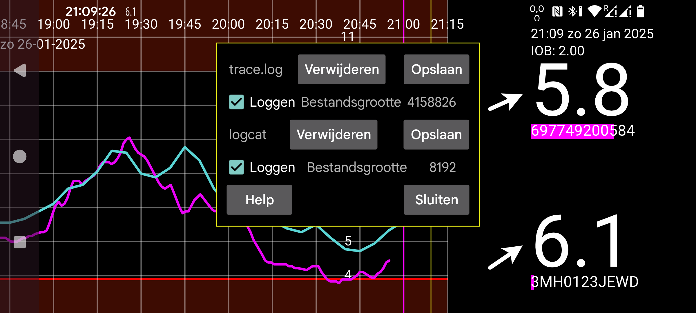

Dit is een logversie van Juggluco. Logbestanden kunnen worden gemaakt in /data/data/tk.glucodata/files/logs
trace.log bevat logberichten die Juggluco zelf maakt. logcat.txt bevat logberichten die Android maakt met betrekking tot Juggluco. Je kunt ze verwijderen en apart opslaan.
Als u problemen ondervindt, kunt u trace.log en logcat.txt naar jaapkorthalsaltes@gmail.com sturen, samen met een beschrijving van de problemen die je hebt ondervonden in de periode waarin deze logbestanden zijn gemaakt.
Bestandsgrootte: grootte van het logbestand
Loggen: Schakel trace.log of logcat loggen in
Verwijderen: verwijder het logbestand
Opslaan: sla het logbestand op in een bestand in /sdcard